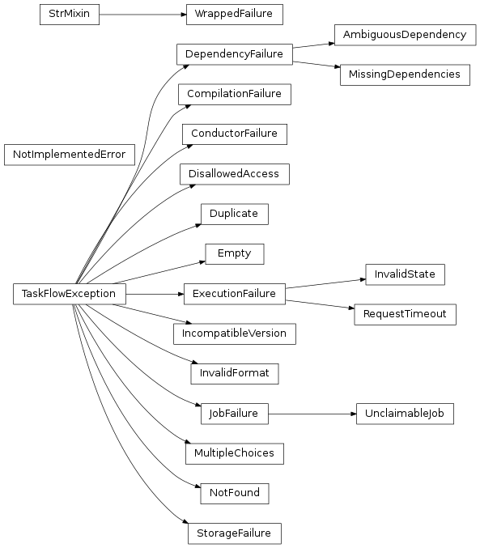

Exceptions¶

-
taskflow.exceptions.raise_with_cause(exc_cls, message, *args, **kwargs)[source]¶ Helper to raise + chain exceptions (when able) and associate a cause.
NOTE(harlowja): Since in py3.x exceptions can be chained (due to PEP 3134) we should try to raise the desired exception with the given cause (or extract a cause from the current stack if able) so that the exception formats nicely in old and new versions of python. Since py2.x does not support exception chaining (or formatting) our root exception class has a
pformat()method that can be used to get similar information instead (and this function makes sure to retain the cause in that case as well so that thepformat()method shows them).Parameters: - exc_cls – the
TaskFlowExceptionclass to raise. - message – the text/str message that will be passed to the exceptions constructor as its first positional argument.
- args – any additional positional arguments to pass to the exceptions constructor.
- kwargs – any additional keyword arguments to pass to the exceptions constructor.
- exc_cls – the
-
exception
taskflow.exceptions.TaskFlowException(message, cause=None)[source]¶ Bases:
exceptions.ExceptionBase class for most exceptions emitted from this library.
NOTE(harlowja): in later versions of python we can likely remove the need to have a
causehere as PY3+ have implemented PEP 3134 which handles chaining in a much more elegant manner.Parameters: - message – the exception message, typically some string that is useful for consumers to view when debugging or analyzing failures.
- cause – the cause of the exception being raised, when provided this should itself be an exception instance, this is useful for creating a chain of exceptions for versions of python where this is not yet implemented/supported natively.
-
exception
taskflow.exceptions.StorageFailure(message, cause=None)[source]¶ Bases:
taskflow.exceptions.TaskFlowExceptionRaised when storage backends can not be read/saved/deleted.
-
exception
taskflow.exceptions.ConductorFailure(message, cause=None)[source]¶ Bases:
taskflow.exceptions.TaskFlowExceptionErrors related to conducting activities.
-
exception
taskflow.exceptions.JobFailure(message, cause=None)[source]¶ Bases:
taskflow.exceptions.TaskFlowExceptionErrors related to jobs or operations on jobs.
-
exception
taskflow.exceptions.UnclaimableJob(message, cause=None)[source]¶ Bases:
taskflow.exceptions.JobFailureRaised when a job can not be claimed.
-
exception
taskflow.exceptions.ExecutionFailure(message, cause=None)[source]¶ Bases:
taskflow.exceptions.TaskFlowExceptionErrors related to engine execution.
-
exception
taskflow.exceptions.RequestTimeout(message, cause=None)[source]¶ Bases:
taskflow.exceptions.ExecutionFailureRaised when a worker request was not finished within allotted time.
-
exception
taskflow.exceptions.InvalidState(message, cause=None)[source]¶ Bases:
taskflow.exceptions.ExecutionFailureRaised when a invalid state transition is attempted while executing.
-
exception
taskflow.exceptions.DependencyFailure(message, cause=None)[source]¶ Bases:
taskflow.exceptions.TaskFlowExceptionRaised when some type of dependency problem occurs.
-
exception
taskflow.exceptions.AmbiguousDependency(message, cause=None)[source]¶ Bases:
taskflow.exceptions.DependencyFailureRaised when some type of ambiguous dependency problem occurs.
-
exception
taskflow.exceptions.MissingDependencies(who, requirements, cause=None, method=None)[source]¶ Bases:
taskflow.exceptions.DependencyFailureRaised when a entity has dependencies that can not be satisfied.
Parameters: - who – the entity that caused the missing dependency to be triggered.
- requirements – the dependency which were not satisfied.
Further arguments are interpreted as for in
TaskFlowException.-
MESSAGE_TPL= "'%(who)s' requires %(requirements)s but no other entity produces said requirements"¶ Exception message template used when creating an actual message.
-
exception
taskflow.exceptions.CompilationFailure(message, cause=None)[source]¶ Bases:
taskflow.exceptions.TaskFlowExceptionRaised when some type of compilation issue is found.
-
exception
taskflow.exceptions.IncompatibleVersion(message, cause=None)[source]¶ Bases:
taskflow.exceptions.TaskFlowExceptionRaised when some type of version incompatibility is found.
-
exception
taskflow.exceptions.Duplicate(message, cause=None)[source]¶ Bases:
taskflow.exceptions.TaskFlowExceptionRaised when a duplicate entry is found.
-
exception
taskflow.exceptions.NotFound(message, cause=None)[source]¶ Bases:
taskflow.exceptions.TaskFlowExceptionRaised when some entry in some object doesn’t exist.
-
exception
taskflow.exceptions.Empty(message, cause=None)[source]¶ Bases:
taskflow.exceptions.TaskFlowExceptionRaised when some object is empty when it shouldn’t be.
-
exception
taskflow.exceptions.MultipleChoices(message, cause=None)[source]¶ Bases:
taskflow.exceptions.TaskFlowExceptionRaised when some decision can’t be made due to many possible choices.
-
exception
taskflow.exceptions.InvalidFormat(message, cause=None)[source]¶ Bases:
taskflow.exceptions.TaskFlowExceptionRaised when some object/entity is not in the expected format.
-
exception
taskflow.exceptions.DisallowedAccess(message, cause=None, state=None)[source]¶ Bases:
taskflow.exceptions.TaskFlowExceptionRaised when storage access is not possible due to state limitations.
-
exception
taskflow.exceptions.NotImplementedError[source]¶ Bases:
exceptions.NotImplementedErrorException for when some functionality really isn’t implemented.
This is typically useful when the library itself needs to distinguish internal features not being made available from users features not being made available/implemented (and to avoid misinterpreting the two).
-
exception
taskflow.exceptions.WrappedFailure(causes)[source]¶ Bases:
taskflow.utils.mixins.StrMixin,exceptions.ExceptionWraps one or several failure objects.
When exception/s cannot be re-raised (for example, because the value and traceback are lost in serialization) or there are several exceptions active at the same time (due to more than one thread raising exceptions), we will wrap the corresponding failure objects into this exception class and may reraise this exception type to allow users to handle the contained failures/causes as they see fit...
See the failure class documentation for a more comprehensive set of reasons why this object may be reraised instead of the original exception.
Parameters: causes – the Failureobjects that caused this this exception to be raised.-
check(*exc_classes)[source]¶ Check if any of exception classes caused the failure/s.
Parameters: exc_classes – exception types/exception type names to search for. If any of the contained failures were caused by an exception of a given type, the corresponding argument that matched is returned. If not then none is returned.
-